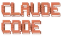

Agentic Engineering & Claude Code
Most developers already use agents. Agentic engineering is the method around them: specs, guardrails, verification gates, and parallel agents. In six weeks you build it into how your team works.
Format
Results
Graduates self-report a median 5× speedup on their final project.
Curriculum
6 Sessions: Ad Hoc Agents to a Repeatable Method

Curriculum built on Claude Code6 training days · 9:00–15:30 · Google Meet
Using a different agent? Why Claude Code →
Pick a week for details. Underlined terms open a definition.
Watch: live
- Claude Code and the agentic loopThe cycle an agent repeats until the task is done: read the context, call a tool, check the result.: prompts, tokens, skills, subagents, MCPModel Context Protocol. The standard way to connect an agent to outside tools and data, such as your issue tracker or database., plans and pricing
- Hooks: observe every tool call, block the dangerous ones
Build: your work
- Set up Claude Code on your own project, or on our sample repo, then /init its CLAUDE.mdA Markdown file in your repo that Claude Code reads at the start of every session: your commands, conventions and rules.
- Two hooks: one observes every tool call, the other blocks reading a secret file; your breakout room then tries to get past it
Watch: live
- Maps of the project: layered summaries, the C4 modelA way to draw software architecture at four zoom levels: system context, containers, components and code., tokens vs the prompt cache
- Design docs, the testing pyramid, validation loops and subagentsHelper agents that the main agent starts for one task, each with a fresh context. Typical jobs: review, validation, search. in depth
Build: your work
- Build a C4-model skill and a DB-schema map, wired into CLAUDE.md
- Prompt engineering, write-then-compare: write yours cold, run it, then run the reference. The delta is the lesson
- Write a spec with acceptance criteria the agent can verify, checked by parallel validation agents
Watch: live
- From validated spec to working code; the two gates every change must pass: e2e and performance
- Loop engineering: turn-based, goal-based, time-based and proactive loops (Anthropic’s “Getting started with loops”)
Build: your work
- Implement the spec in chunks; a validator subagent checks each one, then a /code-review loop runs until no issues remain, with a second review by another vendor’s model
- Build the verification gate for your stack (Lighthouse on a web app, a benchmark elsewhere) with a baseline diff and gated exit codes
- Breakout: one ambitious goal per room. Divide the work, pick a presenter, ship
Watch: live
- Introspection and observability: session logs, /insights, OTEL metrics
- Agent-native architecture, and proactive loops that run without you: log analysis, slow-query triage, payment matching
Build: your work
- Complete 2–5 GitHub issues in parallel, each agent in its own worktreeA git feature that checks out several branches side by side, so each agent works in its own copy of the repo.
- A measurable improvement loop: speed up the test suite or improve your performance score, both gates staying green
Your own work challenge, the whole workflow, instructors on hand. The weeks participants rate highest.
Deliverables
- A configured agentic setup: CLAUDE.md, skills, hooks, gates
- A real feature shipped through the full workflow, with the spec, ADRsArchitecture Decision Records. One short note per design decision: the context, the choice and its consequences. and C4 diagrams
- Final presentation and peer review of about 20 capstones
- sets up the Claude Code harness: CLAUDE.md, skills, and hooks that block dangerous commands
- writes a specification with acceptance criteria the agent can check itself
- builds a verification chain that the agent runs until its work passes (tests, verification and validation)
- automates recurring tasks with loops
- runs several agents in parallel in git worktrees and monitors their work
- documents architecture with C4 diagrams and ADRs
Curriculum: Agentic Engineering & Claude Code · field of study: information and communication technology (software development and programming) · volume 50 academic hours (37.5 hours): 42 contact, of which 16 classroom and 26 practical, and 8 independent study
Goal: participants use AI agents in software development as a repeatable method: clear specifications, guardrails, automated checks and parallel agents.
Recent Webinar
What 300 Developers Taught Us About Agentic Coding
The patterns, data and harness we teach, drawn from every cohort and hackathon we have run since Claude Code shipped in February 2025, across 20+ Estonian companies.
Who Should Join
- 2+ years in a software team, any role
- No programming needed: the agent writes the code, you direct it and check its work
- Your own work challenge: those who bring one benefit most
- Plan for all six days: each one builds on the last
Participants who present a final project receive a Plepic Certificate of Completion: Agentic Engineering & Claude Code
Investment
Training Program
Your own codebase from day one, or our sample repo · 6 Fridays · 37.5 hours · Online via Google Meet
Our first four cohorts sold out. The next cohort starts on 15 January. You can still join it.
+VAT per developer
- For development teams across Europe
- Full 6-session program
- Capstone project on your own codebase
- Certificate of Completion included
Opens a Google Form, 2 minutes
reimbursed, up to €2,500 per employee
Töötukassa reimburses Estonian employers 80% of the training invoice including VAT, capped at €2,500 per employee over three years. If the employer has used up its de minimis aid limit, the rate is 50%. We prepare the application with you. Provider: Plepic koolitus, EHIS majandustegevusteade nr 260952. Apply before training starts →
Join the waitlistOpens a Google Form, 2 minutes
Every cohort we have run finished the full six weeks.
Trained engineers at HELMES · HOLM BANK · DATEL · BITWEB · AKTIVA · DELFI · MERIT · MINDWORKS · RETHINKERS
“The biggest value was a mindset shift: not using AI as a tool, but building architecture around it. An entirely new perspective on applying AI systematically.”
Kristina Krist, Mindworks Industries
“The content was very strong. The biggest value came when I started experimenting on my own project. That’s when real understanding and trust emerged.”
Erich Jagomägis, Bitweb
“It broadens your thinking and shows how to bring AI into your work processes. It gave me a clear direction for where to go next.”
Merilin Sellik, Rethinkers
Bring your whole team
Book a call with Kaido. He explains how Estonian state aid funds the training under the de minimis rules, then shapes a cohort around your team and your codebase.
Talk to KaidoOpens Google Calendar to pick a time
Your Instructors
Kaido co-authored "AI Coding for Beginners"
Start Your Claude Code Course
A 3× promise.3x Time Savings Guarantee: if you don't experience at least 3x time savings in typical development tasks after completing this training, we'll refund your contribution in full. Conditions apply.
Talk to KaidoOpens Google Calendar to pick a time